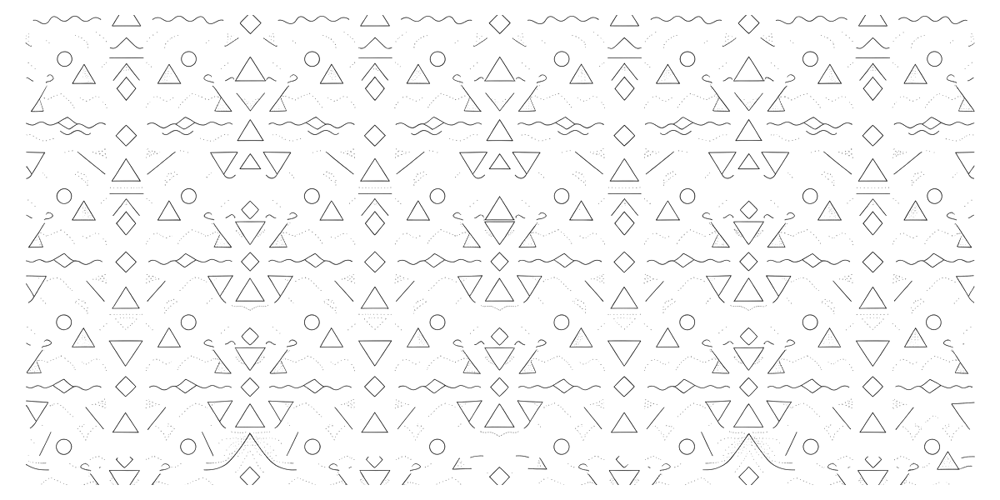

1. Як зібрати об'ємну фішку «Будиночок» (шаблон із захисними фасками)
1
Виріжте заготовку по суцільному зовнішньому контуру (деталь 80 × 88 мм). Нижні кутики передньої грані мають зріз-фаску 5 мм під 45°, щоб кутики не м'ялися в дитячих руках.
2
Зігніть по пунктирах: спершу загніть верхній клапан-фіксатор (8 мм) усередину, а потім складіть деталь по середній пунктирній лінії між сорочкою та звірятами.
3
Зафіксуйте трикутник: підігніть клапан-фіксатор під нижній край передньої грані. Клей і скотч не потрібні.
2. Три варіанти ігор для дітей 3–5 років
🎲 Гра 1. Класичне «Доміно-ланцюжок»
Роздайте гравцям по 4–5 «будиночків» (решта залишається в «базарі»). Першим ставиться дубль. Далі по черзі приставляйте свій «будиночок» так, щоб сусідні звірята збігалися. Якщо потрібного звіра немає — тягніть нову фішку з «базару».
🔍 Гра 2. Лото «Хто сховався в будиночку?»
Перемішайте всі 21 фішку на столі. Ведучий тягне картку-загадку зі сторінки 6 і читає віршик. Дитина відгадує героя, знаходить будь-який «будиночок» із цим звіром, називає його сусіда та забирає фішку собі.
🎭 Гра 3. «Театр звуків і рухів»
Під час викладання фішки в ланцюжок гравець не просто ставить її на стіл, а виконує дію з картки-підказки (мукає, пихтить, як їжачок, стрибає, як жабка) і вигадує коротке речення про зустріч двох звірів на фішці.
Доміно «Будиночок» • Аркуш 2

Доміно «Будиночок» • Аркуш 3
Доміно «Будиночок» • Аркуш 4
Доміно «Будиночок» • Аркуш 5
Намалюй свого звіра
Намалюй свого звіра
Намалюй свого звіра
Намалюй свого звіра
Намалюй свого звіра
Намалюй свого звіра
Доміно «Будиночок» • Аркуш 6
Савана
Жирафа
«Вище всіх дерев у спеку Бачить, хто іде здалеку!»
Завдання: Потягнися вгору, як жирафа, і подивися навколо.
Море
Дельфін
«Хвилі весело гойдає, Над водою вистрибає!»
Завдання: Покажи руками хвильку і поклацай, як дельфін.
Нічний ліс
Сова
«Вдень на гілці солодко спить, А вночі тихенько летить.»
Завдання: Зроби великі круглі очі й скажи: «У-гу, у-гу!»
Ферма та луг
Корівка
«На лузі травичку щипає, Смачним молочком пригощає.»
Завдання: Протяжно й лагідно помукай: «Му-у-у!»
Лісова галявина
Їжачок
«Колючий клубочок під листям біжить, Тихесенько носом у травах пихтить.»
Завдання: Попихти носиком, як їжачок: «Пих-пих-пих!»
Озеро та річка
Жабка
«На листочку біля річки Весело співа пісні!»
Завдання: Зроби стрибок на місці й скажи: «Ква-ква!»